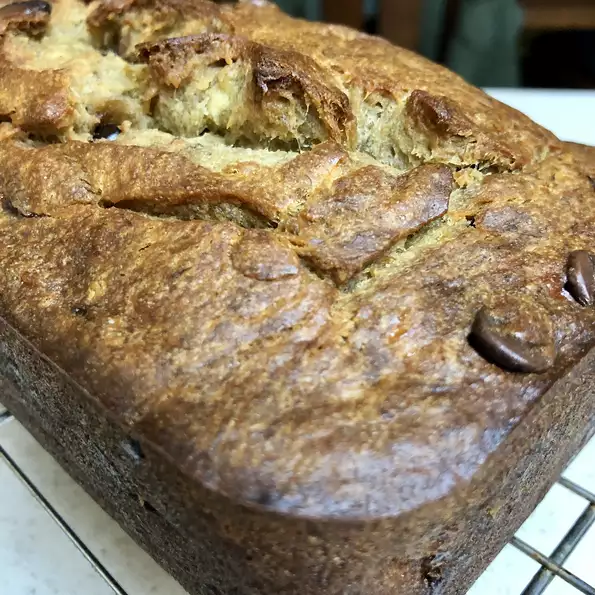

Boozy Banana

Description
A sweet and fun dessert and snack with a little ethanol kick for adults. Perfect to get the party started with some fun or end the night off with a relaxing mouthful.
Ingredients
- cooking spray
- 2 cups all-purpose flour
- 1 tsp salt
- 5 very ripe bananas
- 3/4 cup brown sugar
- 1/2 cup butter
- 3 eggs
- 3 drops almond extract
Steps
- Preheat oven to 350 degrees F (175 degrees C). Spray a loaf pan with cooking spray.
- Whisk flour, salt, and baking soda together in a bowl.
- Mix bananas, brown sugar, butter, eggs, almond extract, and amaretto together in a separate bowl. Add flour mixture; mix just until flour is incorporated, about 1 minute. Transfer mixture to the prepared loaf pan.
- Bake in the preheated oven until a toothpick inserted into the center comes out clean, about 1 hour. Let cool before serving, about 30 minutes.